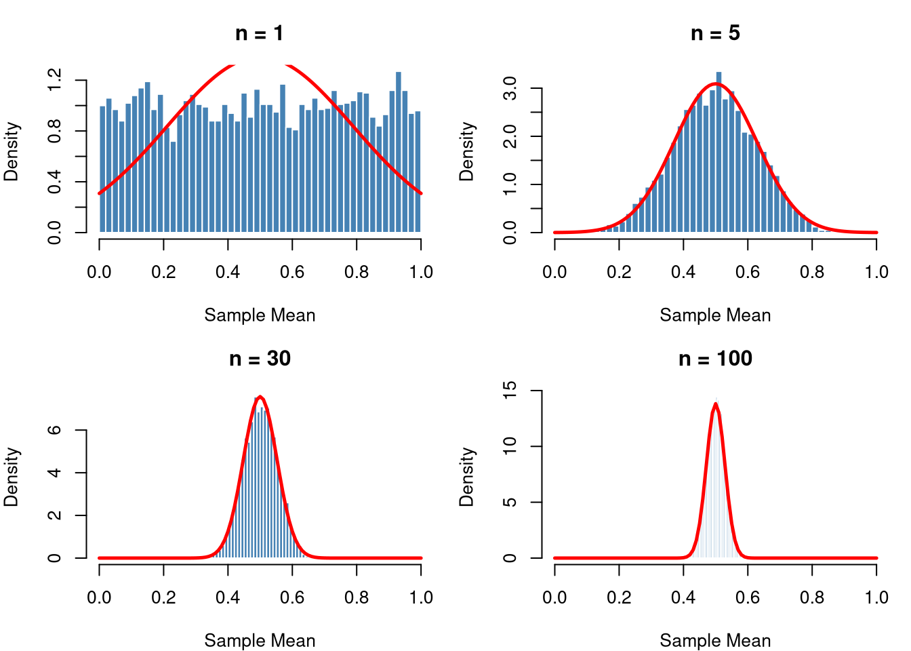
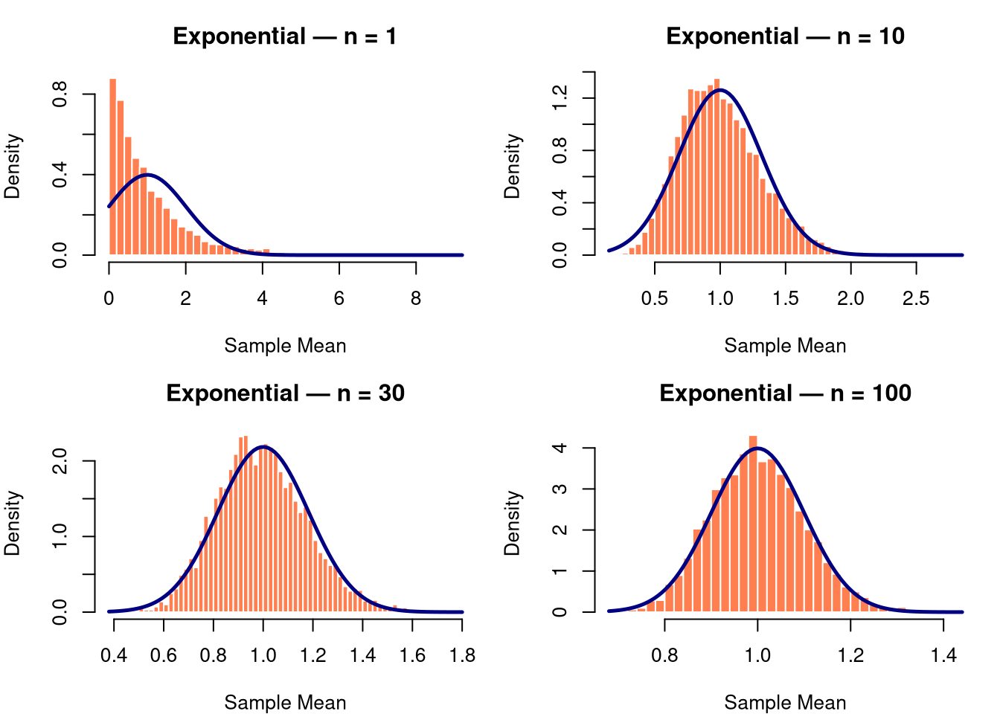
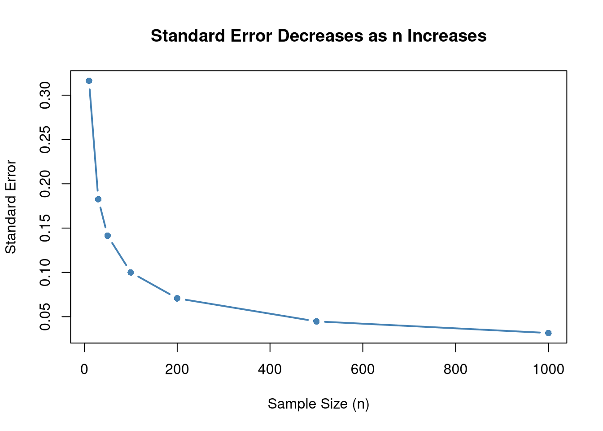

The Central Limit Theorem (CLT) is arguably the most important result in all of statistics. It explains why the normal distribution appears everywhere in practice and forms the theoretical backbone of hypothesis testing, confidence intervals, and much of inferential statistics.
“No matter what shape the original population has, the distribution of the sample mean becomes approximately normal as the sample size increases.”
The Theorem — Formal Statement
Let \(X_1, X_2, \ldots, X_n\) be a random sample of size \(n\) drawn from any population with:
Mean: \(\mu\)
Finite variance: \(\sigma^2\)
Then as \(n \to \infty\), the distribution of the sample mean\(\bar{X}\) approaches a normal distribution:
The standard deviation of the sampling distribution of the mean is called the Standard Error:
\[SE = \frac{\sigma}{\sqrt{n}}\]
As \(n\) increases → SE decreases → sample mean is more precise
Doubling sample size reduces SE by factor of \(\sqrt{2} \approx 1.41\)
Rule of Thumb for Sample Size
Population Shape
Minimum \(n\) for CLT
Roughly symmetric
\(n \geq 30\)
Moderately skewed
\(n \geq 50\)
Heavily skewed / extreme outliers
\(n \geq 100\)
Why Is the CLT So Important?
Inference without knowing population distribution: We can build confidence intervals and run t-tests even when the population is not normal — as long as \(n\) is large enough.
Foundation of hypothesis testing: The Z-test and t-test are direct applications of the CLT.
Quality control: Manufacturing uses CLT to monitor process averages via control charts (X-bar charts).
Finance: Portfolio returns (averages of many individual stock returns) are approximately normal.
Polling and surveys: Sample proportions (a type of mean) follow a normal distribution for large samples.
We draw repeated samples from a Uniform distribution (clearly non-normal) and watch the distribution of sample means converge to normal.
set.seed(42)# Parameterspop_mean <-0.5# mean of Uniform(0,1)pop_sd <-sqrt(1/12) # sd of Uniform(0,1)# Sample sizes to demonstratesample_sizes <-c(1, 5, 30, 100)n_simulations <-5000par(mfrow =c(2, 2), mar =c(4, 4, 3, 1))for (n in sample_sizes) {# Draw 5000 sample means, each from a sample of size n sample_means <-replicate(n_simulations, mean(runif(n, 0, 1)))hist(sample_means,breaks =40,probability =TRUE,col ="steelblue",border ="white",main =paste("n =", n),xlab ="Sample Mean",xlim =c(0, 1))# Overlay the theoretical normal curvecurve(dnorm(x, mean = pop_mean, sd = pop_sd /sqrt(n)),add =TRUE, col ="red", lwd =2.5)}

Simulating the CLT — Exponential Distribution (Very Skewed)
set.seed(123)# Exponential with rate = 1: mean = 1, sd = 1sample_sizes2 <-c(1, 10, 30, 100)par(mfrow =c(2, 2), mar =c(4, 4, 3, 1))for (n in sample_sizes2) { sample_means <-replicate(n_simulations, mean(rexp(n, rate =1)))hist(sample_means,breaks =50,probability =TRUE,col ="coral",border ="white",main =paste("Exponential — n =", n),xlab ="Sample Mean")# Theoretical normal overlaycurve(dnorm(x, mean =1, sd =1/sqrt(n)),add =TRUE, col ="navy", lwd =2.5)}

Demonstrating the Standard Error
# True SE shrinks as n increasesn_values <-c(10, 30, 50, 100, 200, 500, 1000)true_se <-1/sqrt(n_values) # for Exp(1), sigma = 1data.frame(n = n_values,SE =round(true_se, 4))
plot(n_values, true_se,type ="b", pch =16, col ="steelblue", lwd =2,xlab ="Sample Size (n)",ylab ="Standard Error",main ="Standard Error Decreases as n Increases")abline(h =0, lty =2, col ="grey")

Practical Application — Confidence Interval
Suppose we want to estimate the mean weight of students at a university. We take a sample of \(n = 50\) students.
set.seed(99)# Simulated weight data (population: skewed, like real weight data)weights <-rexp(50, rate =1/70) +40# mean ≈ 110 lbs, shiftedn <-length(weights)xbar <-mean(weights)s <-sd(weights)se <- s /sqrt(n)# 95% Confidence Interval using CLT (z = 1.96)z <-qnorm(0.975)ci_lower <- xbar - z * seci_upper <- xbar + z * secat(sprintf("Sample Mean : %.2f\n", xbar))
Sample Mean : 116.07
cat(sprintf("Std Error : %.2f\n", se))
Std Error : 12.80
cat(sprintf("95%% CI : (%.2f, %.2f)\n", ci_lower, ci_upper))
95% CI : (90.98, 141.15)
The 95% CI means: if we repeated this sampling procedure 100 times, approximately 95 of those intervals would contain the true population mean.